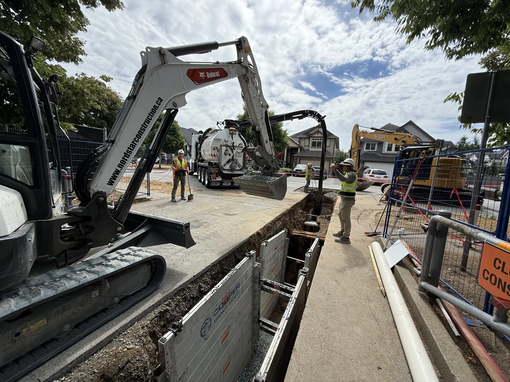

Excavation · Civil · Residential · Commercial
Groundwork
done properly.
Precise excavation, drainage, civil works and site preparation for homeowners, builders, commercial clients and civil projects across the Lower Mainland.
Site work with purpose.
From residential access and sewer work to coordinated civil connections, Apex delivers careful planning, precise execution and a clean professional finish.
Real sites.
Real results.
A curated look at excavation, drainage, civil and finished groundwork. Open any project to browse more photos from the same type of work.



Simple.
Professional.
Review
We look at photos, drawings, access, utilities and the outcome you need.
Plan
We define the scope, sequencing, disposal, coordination and clear next steps.
Execute
Right-sized equipment, careful work and steady communication while the site is active.
Deliver
A tidy, practical handoff ready for the next trade, landscaping or final works.
Groundwork backed by real building experience.
Apex brings a builder's perspective to excavation and civil work — understanding access, sequencing, drainage, structure and what the next trade needs from the site.
Connected to years of construction experience in the Lower Mainland. That means more than moving dirt — it means thinking about the entire project and leaving the site ready for what comes next.
Tell us what
you're building.
Send us the basics about your project and we'll follow up directly. The full Smart Quote experience will return in the next phase.